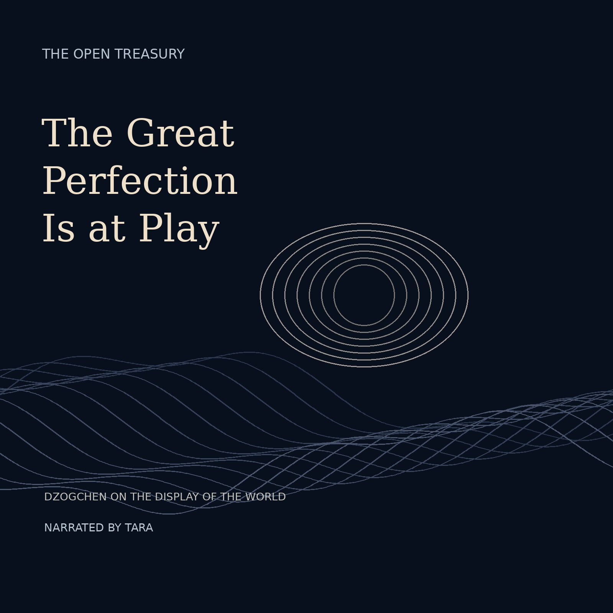

The Great Perfection Is at Play
Dzogchen on the display of the world.
A traditional dice game opens a question about display, illusion and responsibility. Eleven chapters compare the All-Creating King, selected Bardo Thodol passages and a neighboring Kagyu voice in Milarepa. Emptiness is not an eternal Self, spontaneous presence is not moral perfection, and no one gets to call another person's pain play.
Selected sources and original interpretation, not a full translation or practice transmission. Traditional miracles and postmortem accounts are identified as religious narratives, not verified promises. The theatre analogy is tested against compassion, consent and the sources' own warnings.
Chapters
- 00:00 - The Dice Game
- 03:15 - The Great Perfection
- 07:01 - Rolpa: The World as Display
- 10:27 - Lhun Grub: The Unrehearsed Show
- 12:48 - Thugje: Responsiveness, Not an Excuse
- 15:46 - The Theater of Death
- 20:10 - The Laughing Hermit
- 24:59 - The Eight Similes
- 28:24 - The Objection: The Game That Eats Its Players
- 31:31 - What Leave It as It Is Does Not Mean
- 35:51 - The Play Continues
Sources and complete script
Source, edition, rights and audio notes
Complete spoken script
Rights and narration
Short credited excerpts from Jim Valby's copyrighted translation, and selected historical passages from the Dawa-Samdup and Evans-Wentz editions of 1927 and 1928, are discussed in the notes. Modern lineage and academic sources inform factual checks. The combined audio and notes carry no blanket CC0 declaration. Third-party rights remain separate. No source scans, music or filmed ritual are included.
AI narration in the Aoede voice. Specialist names may be approximate. Full automated wording comparison and targeted audio checks, not a full human-ear certification. Public MP3 at 128 kbps. Gain and transparent true-peak limiting only, no speed, pitch or EQ change. -17.88 LUFS, -1.85dB true peak.
Free listening without ads, paid access, sponsorship or support solicitation.